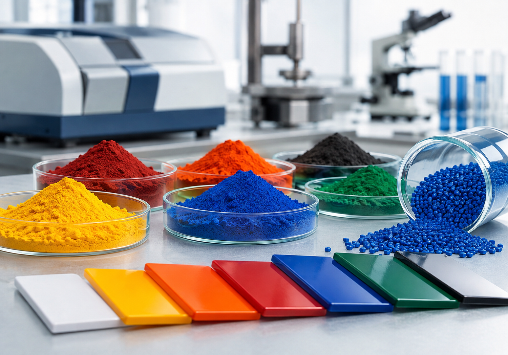
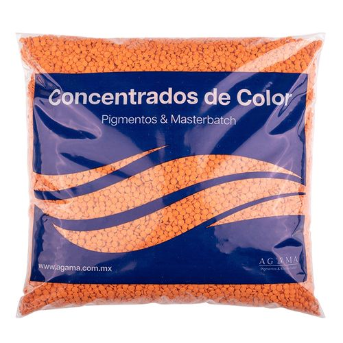

Opaque pigments
Used when the part needs visual coverage, solid color, or reduced transparency.
AGAMA sells opaque and crystal pigments to deliver color in plastic parts. Recommendations are reviewed by resin, process, application, dispersion, and expected opacity or transparency.

A pigment adds color directly to a resin or plastic formulation. It can be used to cover a base, preserve transparency, match a sample, or adjust appearance in parts produced by injection molding, extrusion, or blow molding.
The decision should not be based on color name alone. To avoid variations, it is best to review compatibility, dosage, dispersion, and actual processing conditions.
The first useful distinction is usually between coverage and transparency. After that, resin, process, loading, temperature, and expected visual result are reviewed.
Used when the part needs visual coverage, solid color, or reduced transparency.
Allow transparent or translucent effects when the resin and thickness permit it.
Starts from a sample or target shade to guide trials and maintain visual consistency.
Use these references to frame the conversation: direct color, coverage, opacity, or color matching before moving into a quote.



We confirm whether you work with PE, PP, PVC, styrenics, or another polymer family.
Dispersion and stability can change between injection molding, extrusion, and blow molding.
An opaque part, a crystal part, a film, or an approval sample are each evaluated differently.
Send us your resin, process, application, target color or physical sample, expected finish, and estimated volume. With that context we can quote faster and guide compatibility before moving into price.
Pigments are selected with the process in mind. Each link leads to the catalog to review available options.
Control: dispersion, shade, surface appearance, and thermal stability.
Pigments for injectionControl: visual consistency, loading, compatibility, and continuous production.
Pigments for extrusionControl: coverage, thickness, resin, and visible variation in containers or hollow parts.
Pigments for blow moldingIf you already know the shade, browse the catalog. If you are comparing opaque, crystal, or a color match, request guidance with your sample.
For coverage, solid parts, and transparency reduction.
Browse opaque pigmentsFor translucent parts when the resin and thickness allow it.
Browse crystal pigmentsTo match a shade or validate compatibility before a trial.
Request guidanceThree permanent pieces to better understand pigment, masterbatch, and color behavior in plastics.
Yes. AGAMA sells opaque and crystal pigments for different plastics applications.
Share:
Opaque pigments provide visual coverage; crystal pigments preserve transparency or translucency depending on resin, loading, and application.
Yes. Share your sample, application, and processing conditions before selecting an option from the catalog.
Browse available options or request a quote with resin, process, application, color, and estimated volume.
Choose a product family, then open the scope, application guide, or verified answers for that same grade.